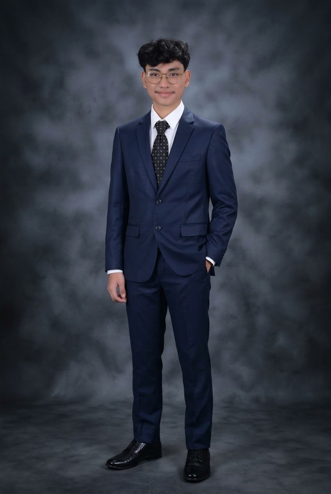

On-the-Job Training
Brandlink Baguio · ICT Student Trainee
- Cleaned and maintained desktop PCs and laptops
- Checked CCTV systems and learned basic troubleshooting
- Learned system tools such as Microsoft Management Console (MMC)
Zander Escosio Mamaril
BSIT student specializing in Web Technology, dedicated to building complete web applications from user interface to database management.

Hello, I'm Zander, a first-year BSIT student majoring in Web Technology at the University of the Cordilleras. I chose full-stack development because I want to build complete websites, from the pages people see to the systems working behind them. I enjoy writing code, solving problems, and learning how the front end, back end, and databases connect to make a web app work.
My goal is to become a full-stack developer who can build complete web applications, from the pages people see to the databases behind them. I also want to learn cybersecurity so the websites I build are secure and safe to use.
Dagupan City, Pangasinan
September 15, 2007 (19 years old)
1st Year BSIT - Web Technology
Working out, reading novels, manhwa, and manga, journaling, sudoku
Python, HTML, CSS, Java, Responsive/mobile-first design, Git & GitHub / GitHub Pages
Acode, Termux, and mobile-based development
zemzemescosio@gmail.com
5'5"
Single
University of the Cordilleras
Filipino
O
Brown
Web Technology, University of the Cordilleras
ICT Programming, Informatics institute Baguio
Bakakeng National High School
Bakakeng Elementary School
Brandlink Baguio · ICT Student Trainee
The people behind the code
Meet the people behind the code
Each one is someone who shaped who I am.